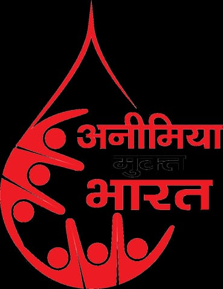

PMAY G RAYSC योजनेतील मंजूर घरकुलाचे कामकाज जलद गतीने पूर्ण करण्यासाठी गावातील पात्र लाभार्थ्यांची घरकुल पूर्ण करून घेण्यासाठी ग्रामपंचायत मार्फत पाठपुरावा केला जात आहे ग्रामपंचायत मार्फत मंजूर करण्यात आलेले आवास योजनेतील घरकुलांचे कामकाजात अभियान कालावधीत पूर्ण करणे बाबत मोहीम स्वरूपात राबवून अभियान कालावधीमध्ये ग्रामपंचायत मार्फत 14घरकुलाची कामे पूर्ण झालेली आहेत.
BANK LINKEJ LON DISBURSEMENT ग्रामपंचायत मार्फत स्वयंसहायता समूह बचत गटात चालू आर्थिक वर्षांमध्ये बँकेमार्फत पतपुरवठा केला असून कर्ज वितरण करून देण्यात आले आहे.
LAKHAPATI DIDI स्वयम सहायता समूह बचत गटातील महिलांना लखपती दीदी बनवण्यासाठी चालू आर्थिक वर्षात उद्दिष्ट होते .त्यापैकी एवढ्या महिलांना लखपती दीदी ग्रामीण अजीविका कार्यक्रम (NRLM) अंतर्गत केले असून त्याचा रिपोर्ट सोबत जोडले आहे.
FPO शेतकरी उत्पादक श्री निधी रेशीम शेतकरी उत्पादक गट स्थापन केला असून या गटात मार्फत रेशीम क्लस्टर शेती सदर गटामार्फत रेशीम उद्योग व रेशीम विक्री व्यवसाय केला जात असून यामध्ये मोठ्या प्रमाणात महिलांचा देखील सहभाग घेतला जातो गावातून दर महिन्याला FPO या शेतकरी उत्पादक गटामार्फत KG रेशीम उत्पादित केले जात असून कर्नाटक राज्यातील रामनगर येथे विक्रीसाठी दर महिन्यात पाठवले जाते या शेतकरी उत्पादक गटाच्या प्रेरणेतून गावामध्ये अनेक शेतकरी रेशीम उद्योग करण्यासाठी प्रवृत्त झाले असून सध्या गावांमध्ये रेशीम उद्योग माध्यमातून शेतकऱ्यांची आर्थिक उन्नती व प्रगती साधण्याचा प्रयत्न ग्रामपंचायत कृषी विभाग मार्फत केला जात आहे.
PMKVY कौशल्य प्रशिक्षण योजना अंतर्गत ग्रामपंचायतच्या माध्यमातून यांना प्रशिक्षण देण्यात आले असून मुख्यमंत्री रोजगार सहायता निधी देखील उपलब्ध करून दिला आहे. गावातील महिलांना बचत गट व्यवसायाचे प्रशिक्षण देण्यात ग्रामपंचायतचा मोलाचा वाटा असून ग्रामपंचायत मार्फत बचत गटातील महिलांना 15th FFC अंतर्गत प्रशिक्षण देण्यात आले असून प्रमाणपत्र वाटप करण्यात आलेले आहेत त्यामुळे सदर लोकांची उन्नती होण्यास मदत झाली आहे.
